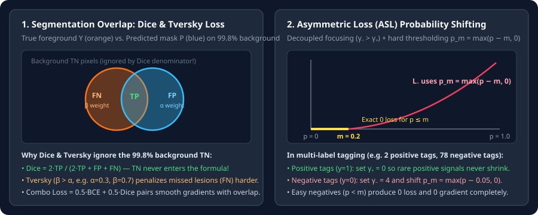

Dense & Spatial Imbalance: Dice, Tversky, and Asymmetric Losses
Derive Soft Dice Loss and its quotient-rule gradient for $99.8\%$ background segmentation, Tversky false-positive/false-negative weighting, and Asymmetric Loss (ASL) for multi-label tagging.
Imbalance is even more extreme in dense prediction than in image classification: a small tumor or road crack in a $512\times 512$ image may occupy $500$ foreground pixels out of $262{,}144$ total pixels ($99.8\%$ background), and a multi-label image typically has $2$ positive tags out of $80$ classes. Pixel-wise cross-entropy averages over all $M$ pixels, so true negatives ($\text{TN}$) swamp the loss. Overlap losses (Dice and Tversky) remove $\text{TN}$ from the denominator altogether.
1. Soft Dice Loss and its exact quotient-rule gradient
The discrete Sørensen–Dice coefficient equals the harmonic mean ($F_1$ score) of pixel-level Precision and Recall, which contains $\text{TP}$, $\text{FP}$, and $\text{FN}$—but never $\text{TN}$:
To make Dice differentiable with respect to continuous probabilities $p_i=\sigma(z_i)\in(0,1)$ and binary ground-truth masks $y_i\in\{0,1\}$, Milletari et al. (V-Net, 2016) define the Soft Dice Loss (with Laplace smoothing $\epsilon>0$ to handle empty foreground masks $\sum_i y_i=0$):
where $I=\sum_{i=1}^M p_i y_i$ is the soft intersection and $U=\sum_{i=1}^M p_i^2+\sum_{i=1}^M y_i^2$ is the squared-sum denominator. Differentiating $L_{\text{Dice}}$ with respect to pixel $j$’s predicted probability $p_j$ via the quotient rule gives:
Notice how every pixel’s gradient depends on the global region totals $I$ and $U$: if the foreground object is tiny ($U$ is small), the denominator $(U+\epsilon)^2$ automatically scales up the gradient of every foreground pixel without any manual class weight $\alpha$!

2. Tversky Loss and Combo Loss: controlling FP vs. FN
Standard Dice weights false positives ($\text{FP}=\sum_i p_i(1-y_i)$) and false negatives ($\text{FN}=\sum_i(1-p_i)y_i$) equally ($1/2$ each). In medical lesion segmentation, missing a small lesion ($\text{FN}$) is far worse than over-segmenting its border by a few pixels ($\text{FP}$). Salehi et al. (2017) generalize Dice to the Tversky Index with tunable penalties $\alpha$ on $\text{FP}$ and $\beta$ on $\text{FN}$:
- $\alpha=\beta=0.5$: recovers Soft Dice Loss ($F_1$ score).
- $\alpha=\beta=1.0$: recovers the Jaccard / IoU Loss.
- $\alpha=0.3,\,\beta=0.7$: penalizes missed foreground pixels ($\text{FN}$) $2.33\times$ harder than false alarms ($\text{FP}$), boosting recall on tiny structures.
- Combo Loss ($\lambda L_{\text{BCE}}+(1-\lambda)L_{\text{Dice}}$): Because $(U+\epsilon)^2$ in the Dice denominator can cause unstable gradients when $I\approx 0$ early in training, production segmentation pipelines (such as nnU-Net) sum pixel-wise Cross-Entropy and Soft Dice Loss.
3. Asymmetric Loss (ASL) for multi-label imbalance
In multi-label classification, each image has $K$ independent binary targets $y_k\in\{0,1\}$, where almost all labels are $0$. Applying symmetric Focal Loss with $\gamma=2$ to both $y_k=1$ and $y_k=0$ has a flaw: it also down-weights rare positive labels by $(1-p)^\gamma$! Ridnik et al. (ICCV 2021) fix this with Asymmetric Loss (ASL) using two changes—decoupled focusing exponents $\gamma_->\gamma_+$ (typically $\gamma_+=0,\gamma_-=4$) and hard probability shifting $p_m=\max(p-m,0)$ on negatives:
Any negative label with predicted probability $p\le m$ gets shifted to $p_m=0$, producing exact $0$ loss and $0$ gradient, completely zeroing out easy background classes.
4. PyTorch implementation: Soft Dice, Tversky, and ASL
import torch
import torch.nn as nn
class TverskyLoss(nn.Module):
"""alpha=0.5, beta=0.5 -> Soft Dice Loss; alpha=0.3, beta=0.7 -> Recall-biased Tversky."""
def __init__(self, alpha: float = 0.3, beta: float = 0.7, eps: float = 1e-6):
super().__init__()
self.alpha, self.beta, self.eps = alpha, beta, eps
def forward(self, logits: torch.Tensor, targets: torch.Tensor) -> torch.Tensor:
probs = torch.sigmoid(logits).view(logits.size(0), -1)
y = targets.float().view(targets.size(0), -1)
tp = (probs * y).sum(dim=1)
fp = (probs * (1.0 - y)).sum(dim=1)
fn = ((1.0 - probs) * y).sum(dim=1)
tversky = (tp + self.eps) / (tp + self.alpha * fp + self.beta * fn + self.eps)
return (1.0 - tversky).mean()
class AsymmetricLoss(nn.Module):
"""Ridnik et al. (ICCV 2021) Asymmetric Loss for multi-label imbalance."""
def __init__(self, gamma_pos: float = 0.0, gamma_neg: float = 4.0, clip: float = 0.05, eps: float = 1e-8):
super().__init__()
self.gamma_pos, self.gamma_neg, self.clip, self.eps = gamma_pos, gamma_neg, clip, eps
def forward(self, logits: torch.Tensor, targets: torch.Tensor) -> torch.Tensor:
p = torch.sigmoid(logits)
p_m = (p - self.clip).clamp(min=0.0)
loss_pos = targets * ((1.0 - p).pow(self.gamma_pos)) * torch.log(p.clamp(min=self.eps))
loss_neg = (1.0 - targets) * (p_m.pow(self.gamma_neg)) * torch.log((1.0 - p_m).clamp(min=self.eps))
return -(loss_pos + loss_neg).mean()5. Questions worth answering
If a cropped patch contains no foreground pixels ($\sum_i y_i=0$) and the network correctly predicts $p_i\approx 0$, both the numerator $2I$ and denominator $U$ approach $0$. Adding $+\epsilon$ in both numerator and denominator makes $\frac{2I+\epsilon}{U+\epsilon}=1$ (loss $=0$) when both mask and prediction are empty.
In multi-label datasets with $50+$ classes, positive tags are so scarce that down-weighting positive examples with $(1-p)^2$ starves the network of positive gradients; setting $\gamma_+=0$ preserves $100\%$ of the positive gradient while $\gamma_-=4$ and $p_m$ suppress the overwhelming negatives.